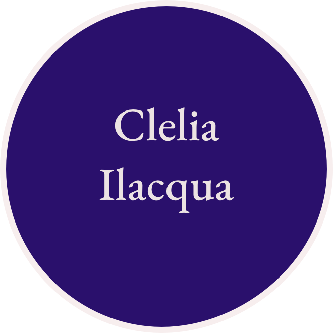
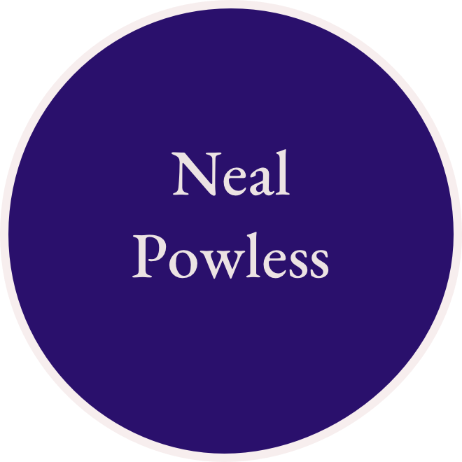
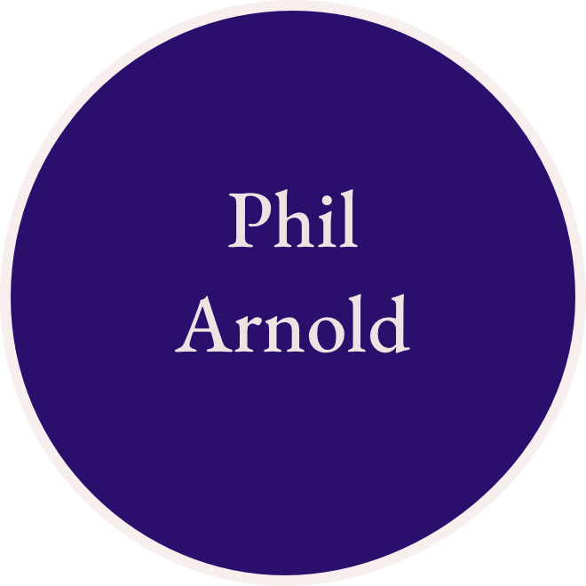

<!DOCTYPE html>
<html lang="en" dir="ltr">
  <head>
    <meta charset="utf-8">
    <title>Stories Player</title>
    <meta name="description" content="360&deg; Image - A-Frame">
    <script src="https://aframe.io/releases/1.3.0/aframe.min.js"></script>
    <script src="https://unpkg.com/aframe-event-set-component@5/dist/aframe-event-set-component.min.js"></script>
    <script src="https://unpkg.com/aframe-layout-component@5.3.0/dist/aframe-layout-component.min.js"></script>
    <script src="https://unpkg.com/aframe-template-component@3.2.1/dist/aframe-template-component.min.js"></script>
    <script src="https://unpkg.com/aframe-proxy-event-component@2.1.0/dist/aframe-proxy-event-component.min.js"></script>
    <script src="assets/script.js" defer></script>
  </head>
  <body>
    <a-scene cursor='rayOrigin: mouse' raycaster='objects: [sound]'>
      <a-assets>
        <!-- <audio id="audio-andy" src="audio/mager.m4a" crossorigin="anonymous"></audio>
        
        
        <audio id="audio-blake" src="audio/garland-tirado.m4a" crossorigin="anonymous"></audio>
        
        
        <audio id="audio-cecelia" src="audio/ilacqua.m4a" crossorigin="anonymous"></audio>
        
        
        <audio id="audio-cindy" src="audio/squillace.m4a" crossorigin="anonymous"></audio>
        
        
        <audio id="audio-colleen" src="audio/zawadzki.m4a" crossorigin="anonymous"></audio>
        
        
        <audio id="audio-danielle" src="audio/smith.m4a" crossorigin="anonymous"></audio>
        
        
        <audio id="audio-david" src="audio/mccallum.m4a" crossorigin="anonymous"></audio>
        
        
        <audio id="audio-hillary-anne" src="audio/coppola.m4a" crossorigin="anonymous"></audio>
        
        
        <audio id="audio-neal" src="audio/npowless.m4a" crossorigin="anonymous"></audio>
        
        
        <audio id="audio-phil" src="audio/arnold.m4a" crossorigin="anonymous"></audio>
        
        
        <audio id="audio-robert" src="audio/searing.m4a" crossorigin="anonymous"></audio>
        
        
        <audio id="audio-sandra" src="audio/sbigtree.m4a" crossorigin="anonymous"></audio>
        
        
        <audio id="audio-sarah" src="audio/nahar.m4a" crossorigin="anonymous"></audio>
        
        
        <audio id="audio-sophia" src="audio/spowless.m4a" crossorigin="anonymous"></audio>
        
        
        <audio id="audio-sue" src="audio/eiholzer.m4a" crossorigin="anonymous"></audio>
         -->
        
        <!--  -->

        <audio id="audio-phil" src="audio/arnold.m4a" preload="auto" crossorigin="anonymous"></audio>
        

        
        
        <!-- <script id="script-phil" type="text/html">
          <a-entity class="link"
            geometry="primitive: sphere; 
                      radius: 5;
                      "
            material="shader: phong; transparent: true; src: ${thumb}" 
            sound="on: click; src: #audio-phil">
          </a-entity>
        </script> -->

        <!-- <script id="person" type="text/html">
          <a-entity class="link"
            geometry="primitive: plane; height: 5; width: 5;"
            material="shader: phong; transparent: true; src: ${thumb}; side: double;" 
            sound="on: click; src: ${clip}">
          </a-entity>
        </script> -->
        
        <script id="person" type="text/html">
          <a-entity class="link"
            geometry="primitive: plane; height: 5; width: 5;"
            material="shader: phong; transparent: true; src: ${thumb}; side: double;" 
            sound="src: ${clip}; on: click;"
            >
          </a-entity>
        </script>
        
      </a-assets>

      <a-sky id="image-360" src="#circle" radius="50" position="0 0 0" rotation="-3 86 9"></a-sky>

        <a-entity 
          template="src: #person;" 
          data-thumb="#img-phil;"
          data-clip="#audio-phil;"  
          position="0 -2 -28;" 
          rotation="0 0 0;"
          >
        </a-entity>

      

      <a-camera>
        <a-cursor id="cursor" 
        geometry="primitive: ring; radiusInner: 0.01; radiusOuter: 0.02"
        material="color: white; shader: flat;"
        animation__click="property: scale; from: 1 1 1; to: 1.5 1.5 1.5; easing: easeInCubic; dur: 150; startEvents: click" animation__clickreset="property: scale; to: 0.1 0.1 0.1; dur: 1; startEvents: animationcomplete__click" animation__fusing="property: scale; from: 1 1 1; to: 0.1 0.1 0.1; easing: easeInCubic; dur: 150; startEvents: fusing"></a-cursor>
      </a-camera>

    </a-scene>
  </body>
</html>
